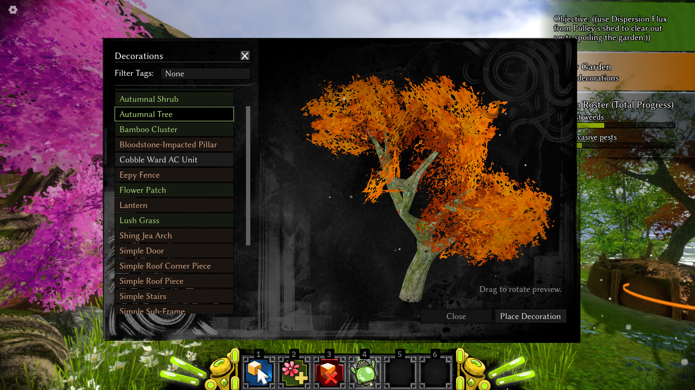

1.2025


Visit the main Jade Spring page!
Take some time to relax, potter, and decorate in Jade Spring, a small, independent Guild Wars 2 sandbox fan game. Tend your garden as a Xunlai jade bot, clearing weeds and pests, dispelling Dragonvoid blights, and furnishing your plot with architecture, flora, furniture, and ornaments from across Tyria!
Hey everyone! It’s been just under two months since the first development log for Jade Spring was published (and just shy of three months since the repository was opened), so it’s about time for a second quick check-in! First of all, to anyone who’s been interested in and following Jade Spring, thank you so much. I am so happy to be able to share my random little project and interests; and the idea of you eventually being able to play the game for yourself both excites and terrifies me! I’m determined to make it as polished and enjoyable as I can, even with its small scope and my lack of experience.
Speaking of polish, Jade Spring has seen a lot of improvements since the last developer note. Thanks in large part to areyoshi’s diligent efforts play-testing an early build of the game, a couple dozen major additions and fixes were identified and worked on, such as better camera controls and behaviours, more fluid decoration adjustment tools, sprinting, first-person view, and lots and lots of fixes and polishing!

Controls are much more fluid now, for the most part. I’m still trying to chase down some weird edge cases where the decoration seems to simply ‘escape’ without warning or reason!

Your garden steward and companion, golem Pulley-4! They will guide you through the beginning of your experience; and they’re carefully guarding a ‘safe point’ that you can always return to. Jade Spring imposes almost no restrictions on where and how you can place decorations, so you can always return to a protected area of land if you find yourself stuck.
Jade Spring stuff for 1.2a!! 🌿 Input mapping, sprinting, selection outlines, more tactile adjustments, per-decoration animations (like doors) and more #GuildWars2 #GameDev
— Alec 🌸 (@slyllama.net) January 29, 2025 at 11:16 AM
[image or embed]
Here are the next steps for Jade Spring:

Clearing out bugs using Asuran ‘Dispersion Golems’ – they disrupt air currents in order to keep pests away for a good while. Dragonvoid will follow the same clearing pattern, except that the Dispersion Flux will need to be charged through a fun music-based mini-game I’m just starting to work on now!
The decoration selection is expanding all time, but right now it’s still relatively limited. I will be adding some more garden basics, architectural pieces, and Canthan furniture in order to round off the initial release.
Thank you so much for reading this far, and again, for your interest in Jade Spring. I’ve had so much fun (and found so much meaning) making this tiny little game. /bloodstoneboogie all the way‼ (By the way, I post a lot about development and art on Bluesky, and I love chatting to people there, so do take a look if you’re interested.)
Notice as specified by ArenaNet’s content terms of use: © ArenaNet LLC. All rights reserved. NCSOFT, ArenaNet, Guild Wars, Guild Wars 2, GW2, Guild Wars 2: Heart of Thorns, Guild Wars 2: Path of Fire, Guild Wars 2: End of Dragons, and Guild Wars 2: Secrets of the Obscure and all associated logos, designs, and composite marks are trademarks or registered trademarks of NCSOFT Corporation.